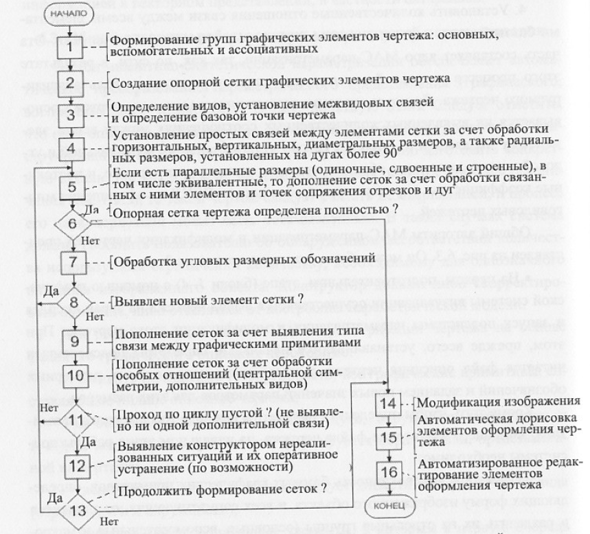

Вопрос 27: Общий алгоритм работы системы последующей параметризации.
Метод аналитико-синтетической параметризации обеспечивает автоматическое преобразование параметрического представления в форму, понятную для ЭВМ.
Для решения общей задачи МАС-параметризации чертежа на основе файла его графического описания необходимо:
- Выявить и разделить (отсортировать) все графические примитивы, составляющие полное описание чертежа:
- на основные или базовые (отрезки, дуги, окружности, полилинии и т.п.), из которых непосредственно формируется образ детали, представленной на чертеже;
- вспомогательные, к которым следует отнести оси различного вида (отрезки, дуги и окружности);
- макросы или ассоциативные элементы, к которым в первую очередь относятся образы размерных обозначений различного вида, определяющие параметры основных элементов, а также всевозможные технологические обозначения, сортируемые по типам, текстам примечаний, форматы с основными и дополнительными надписями.
- Создать нерегулярную ортогональную опорную сетку чертежа.
- Создать угловую сетку чертежа.
- Установить количественные отношения связей между всеми элементами базовой сетки через размерные параметры, нанесенные на чертеже.
Общий алгоритм МАС-параметризации и модификации чертежей.

(Не факт, что следующая информация нужна в ответе)
Общий алгоритм МАС-параметризации и модификации чертежей представлен на рисунке. Его можно условно разделить на 3 этапа:
- На первом, подготовительном, этапе (блоки 1-4) с помощь. графической системы визуализации осуществляется вывод чертежа на экран дисплея и запуск подсистемы параметризации и модификации этого чертежа При этом устанавливаются начальные параметры подсистемы и читается файл описания чертежа с выявлением используемых размерных обозначений и заданием новых значений параметров для этих размеров.
Чтобы определить параметры каждого графического примитива, входящего в описание файла чертежа, на начальном этапе подсистемы необходимо:
- выявить всю совокупность базовых графических примитивов, определяющих форму изображенного объекта, и всех сопутствующих им элементов и разделить их на отдельные группы (основные, вспомогательные и макросы), а внутри каждой группы выделить типы. Далее элементы соответствующего типа должны быть сгруппированы по видам представления;
- создать соответствующие элементы базовых координатных сеток (по осям X, Y), выявив координаты X_i и Y_j характерных точек каждого элемента, определяющего форму объекта, а также элементы угловой сетки (Alf_k). Это угловая сетка создается на основании анализа наклона отрезков и углового расположения точек начала и конца всех дуг;
- формировать, параллельно с анализом геометрических параметров графических элементов чертежа, данные по прямоугольникам, охватывающим области, соответствующие отдельным видам детали, представленным на чертеже;
- начать формировать размерные сетки чертежа, например WX, WY и WA, выявив простые линейные, радиальные, диаметральные и угловые размерные обозначения;
- определить одновременно с созданием размерных сеток WX, WY и WA базовую точку чертежа, на основании значений координат которой должны рассчитываться новые связи между всеми элементами базовых опорных сеток.
Как правило, после первого этапа в основной сетке остается ряд неопределенных элементов, т.к. при создании чертежа часть примитивов формируется с учетом параллельных и угловых размерных обозначений, которые непосредственно не определяют связи между элементами ортогональных сеток.
- На втором этапе (блоки 5-13) связи между элементами сетов должны определяться в циклическом режиме. Это обусловлено тем, что порядок определения параметров сеток сильно зависит от структуры и порядка построения изображения и используемых в нем размерных обозначений. Начало второго этапа определения элементов ортогональных сеток связанно с обработкой параллельных размерных обозначений. Одновременно осуществляется доопределение ортогональных сеток и определение элементов угловой сетки за счет обработки угловых размерных обозначений. Если опорные сетки после выполненных операций все еще не определены полностью, то для каждого непосредственного элемента сетки выявляются связанные с ним примитивы изображения. При этом реализуется следующая последовательность операций:
- определяются графические примитивы, к которым относится эта особая точка;
- выявляется вид отношения этих примитивов друг с другом в данной точке (сопряжение, пересечение, перпендикулярность и т.д.);
- на основании соотношений, соответствующих выявленному виду связи, определяются количественные значения параметров связи для соответствующих элементов опорной сетки координат точки сопряжения отрезка и дуги с координатами её центра на основании известных параметров свободного конца отрезка и параметров центра радиуса дуги.
При наличии неопределенных элементов после выполнения второго этапа возвращаются либо к началу второго, либо переходят к третьему этапу. Возврат к началу второго этапа осуществляется, если в ходе текущего цикла работы системы был определен хотя бы один новых элемент какой-либо составляющей базовой сетки или выявлены не реализованная в алгоритме ситуация, и конструктор для её разрешения ввел новые данные.
Т.о., второй этап завершается либо полным определением сеток чертежа, либо выходом из неразрешимой ситуации в случае невозможности выявления за весь цикл не одного нового элемента в любой сетке.
- На третьем, завершающем, этапе (блоки 14-16) осуществляется модификация изображения в соответствии с набором новых значений размерных обозначений.